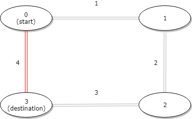

LC 1184 - Distance Between Bus Stops
Table of Contents
1184. Distance Between Bus Stops
Link: Distance Between Bus Stops
Problem Description
A bus has n stops numbered from 0 to n - 1 that form a circle. We know the distance between all pairs of neighboring stops where distance[i] is the distance between the stops number i and (i + 1) % n.
The bus goes along both directions i.e. clockwise and counterclockwise.
Return the shortest distance between the given start and destination stops.
Example 1:

Input: distance = [1,2,3,4], start = 0, destination = 1
Output: 1
Explanation: Distance between 0 and 1 is 1 or 9, minimum is 1.
Example 2:

Input: distance = [1,2,3,4], start = 0, destination = 2
Output: 3
Explanation: Distance between 0 and 2 is 3 or 7, minimum is 3.
Example 3:

Input: distance = [1,2,3,4], start = 0, destination = 3
Output: 4
Explanation: Distance between 0 and 3 is 6 or 4, minimum is 4.
Constraints:
1 <= n <= 10^4distance.length == n0 <= start, destination < n0 <= distance[i] <= 10^4
Method & Code
There is only one connection between neighboring stops, which means it is a circular array. Only two ways to reach destination from start: forward or backward. Calculate the sum of array, and the cost from start to the destination.
The forward cost is from start to the end, the backward cost is the sum minus forward cost. Find the minor cost. Note that if start is located at the later of destination, swap them first.
/**
* There is only one connection between neighboring stops, which means it is a circular array.
* Only two ways to reach destination from start: forward or backward.
* Calculate the sum of array, and the cost from start to the destination.
* The forward cost is from start to the end, the backward cost is the sum minus forward cost. Find the minor cost.
* Note that if start is located at the later of destination, swap them first.
*
* @param distance given array
* @param start start position
* @param destination end position
* @return shortest distance between the given start and destination stops
*/
public int distanceBetweenBusStops(int[] distance, int start, int destination) {
if (start > destination) { // swap start and destination if start is larger than destination
int tmp = destination;
destination = start;
start = tmp;
}
int forward = 0, total = 0;
for (int i = 0; i < distance.length; i++) {
if (i >= start && i < destination) {
forward += distance[i];
}
total += distance[i];
}
return Math.min(forward, total - forward);
}